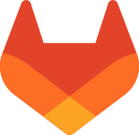

Alban MARTEL 31500 Toulouse 07 .. .. .. .. alban.f.j.martel@laposte.net Permis B + Véhicule Anglais B1
@alban-martel-3a53a227a
@albanmartel

Python (Django), Java (Spring), SQL
HTML5, CSS3 (Bases), Angular (Bases), XML / JSON
Bash, PowerShell, Virtualisation, Administration basique du Réseau
Git, CMake
IntelliJ IDEA, PyCharm, VS Code, Eclipse, Vim
2018/2022 Conseiller Funéraire
2014-2017 Missions informatiques (développement, commercial…)
1998/2011 Responsable de domaine viticole - Provence (83)
Besoin d’un cadre de travail calme pour favoriser la concentration et l’efficacité Port de charges : 20kg max
Actuellement en CDD Tremplin sur un poste de développeur Python-JAVA, comprenant un temps de formation jusqu’à la fin de l’année, je suis à la recherche d’une alternance pour janvier 2027 de 13 mois. L’objectif est de préparer le titre RNCP 6 «Concepteur Développeur d'Applications Python/Java». Mon parcours professionnel m'apporte autonomie, rigueur et savoir être en entreprise. Je souhaite mettre mes bases en Python (Django) et Java (Spring) au service de vos projets web et du développement de vos fonctionnalités serveur.
Développeur d’applications - FMS , Toulouse Depuis juin 2026 Développement d'applications : Python et Java, Django, Spring, SQL, Git. Méthodes : Agile (Scrum), UML, algorithmique, projets collaboratifs, tests unitaires.
Technicien Support Informatique - Expectra Intérim , Toulouse 2024 - 3 mois Qualité et Méthode : Diagnostic méthodique et gestion des incidents applicatifs/systèmes dans un cadre certifié ITIL (EasyVista). Administration Système : Agile (Scrum), UML, algorithmique, projets collaboratifs, tests unitaires.
- Technicien Supérieur Systèmes et Réseaux - RNCP37682 (2024)
- Préqualification Métiers Numériques (2023)
- Licence pro. Développement et Qualité du logiciel - RNCP15469 (2014)
- DUT informatique C++, PHP, HTML, SQL- RNCP20654 (2013)